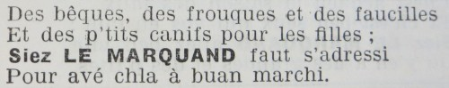
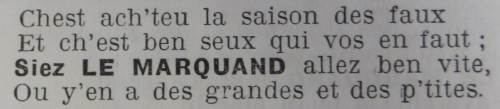
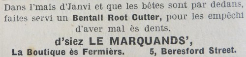
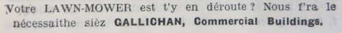
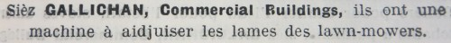
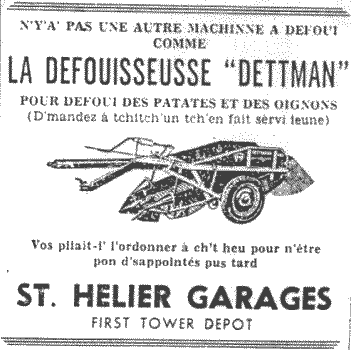

| Jèrriais | Angliais |
| affileuse | whetstone |
| adgulle | needle |
| aimant | magnet |
| alêne | awl |
| aûgouaithe | drill |
| barre | crowbar |
| bat'tie d'tchuîsinne | kitchen utensils |
| becque-de-corbîn | secateurs |
| bédane | mortise chisel |
| bêque | spade |
| bigorne | pick |
| bosc à ongliet | mitre-box |
| bouôlette | screw stock |
| brédâle | bradawl |
| brînge | broom |
| brioche | pocket-knife, penknife |
| bûcheux | felling axe |
| cannif | penknife |
| câsse-bouais | felling axe |
| cauche-pid | shoe horn |
| caûcheux | mortise gauge |
| chaûfaud | scaffolding |
| chîsé à fraid | cold chisel |
| chîsé | stone chisel |
| chîsieaux d'gardîn | garden shears |
| chîsieaux | scissors |
| chiviéthe à bras | stretcher |
| chiviéthe | wheelbarrow |
| choutchet | anvil block |
| clié à êcrouettes | spanner |
| cliou d'chopîn | tack |
| cliou d'chopîn | tack |
| cliou | nail |
| compas | compass, dividers |
| contré-riveûthe | rivet washer |
| cônué | pit-saw |
| coq | tap |
| coul'rêsse | colander |
| courbe | brace |
| couté à deux mains | draw knife |
| couté à main | spokeshave |
| couté à viande | carving knife |
| couté | knife |
| coutell'lie | cutlery |
| craîncheux | sieve |
| crampe | clamp |
| crampon | staple |
| craque-nouaix | nutcracker |
| cro à patates | potato fork |
| dague | cooper's dog |
| dard | serrated sickle |
| dent d'manman | router |
| dgiabl'ye | jemmy |
| dgichon | scoop, basin |
| dgilliaume | rabbet-plane |
| dréch'rêsse | ladle |
| êcrou | bolt |
| enclieunme | anvil |
| entonneux | funnel |
| êpîle | pin |
| êpinnoque-dents | toothpick |
| êpousseteux | duster |
| êtampe | branding iron, stamp |
| êtau | vice |
| êtchèrre d'ongliet | mitre square |
| êtchèrre | set square |
| êt'lîn | plugging tool |
| faûcillon | small sickle |
| faûcil'ye | sickle |
| fausse êtchèrre | bevel square |
| faux | scythe |
| fé à soder | soldering iron |
| fieillâtre | rabbet plane |
| filiéthe | screw stock, draw plate |
| fliais | flail |
| fonceux | small grooving plane |
| forches | shears |
| fourchette | fork |
| fourtchet | 2 pronged fork |
| fourtchette à gardîngni | small digging fork |
| frouque | fork (for digging) |
| gîmblet | gimlet |
| grappîn | grapnel, fork with hooked tines |
| grattise | grater |
| greffeux | grafting knife |
| griffon | hoe |
| hache à bras | draw knife |
| hache | axe |
| hachot | cleaver |
| hale-cliou | nail-claw |
| hale-doque | dock lifter |
| hèrche | harrow |
| hotte | hod |
| houette | hoe |
| jointcheux | jointing plane |
| lînme | file |
| maîlloche | mallet |
| mandrîn | punch, mandrel |
| marté à deux mains | sledgehammer |
| marté à êbaûchi | spoiling hammer |
| marté à pattes | claw hammer |
| marté à river | rivet hammer |
| marté | hammer |
| mâtant | scaffolding |
| mèrtcheux | marker, stamp |
| meule | grindstone |
| monte-paille | pitchfork |
| mortchi | mortar |
| moûleuse | moulding plane |
| m'suthe | tape measure |
| nâbl'ye | plughole |
| nivé | spirit level |
| ouaîsé | hod |
| ouothelle d'âne | reamer |
| p'tites pînchettes | tweezers |
| pagas | toolbag |
| palette à beurre | butter pat |
| palette à chucre | sugar scoop |
| palette à tchèrbon | coal shovel |
| papi tîmbré | sandpaper |
| pâsse-partout | compass saw, keyhole saw |
| pelle | shovel |
| pèrcheux | borer |
| pid d'fé | last |
| piègne à chorchi | hay rake |
| pilon | pestle |
| pînchettes à tchèrbon | coal-tongs |
| pînchettes | tweezers, pincers, tongs |
| pîncieau | paintbrush |
| pinnoche | spigot |
| pliomb | plumbline |
| plionmet | spirit level |
| plogue | plug |
| pointes dé Paris | wire nails |
| pôkeur | poker |
| porte-caux | plasterer's hod |
| porte-mortchi | hod |
| pouaîsson | punch, pitching tool, drawing-awl |
| poudrette | powder-puff |
| poudriyi | sprinkler |
| pouèrre | powder-flask |
| quart-dé-rond | quarter-round plane |
| rabot à chaûfrein | chamfer plane |
| rabot à fieilleuse | rabbet plane |
| rabot à moûleuse | moulding plane |
| rabot | 1) long-handled stirrer; 2) plane |
| râpe | rasp, grater |
| râseux | razor |
| râté | rake |
| rîndelle en fé | metal washer |
| rivet | rivet |
| riveux | rivet tool, riveting block |
| roufflieux | jack plane |
| roufliard | jack plane |
| savonnette | shaving brush |
| scie à chaîne | chain saw |
| scie à main | hand saw |
| scie à riban | band saw |
| scie d'but | pit saw, ripper saw |
| scie d'long | pit saw |
| scie | saw |
| scrobinne-broche | scrubbing brush |
| sèrcliérêsse | weeding hoe, weeder |
| sèrclieux | weeding hoe |
| sérîngue | syringe |
| sèrpe | billhook |
| sodeux | soldering iron |
| soûffliets | bellows |
| spâleux | spalling-hammer |
| tathouette | brace |
| tchian | jack-screw, cooper's dog |
| tchulyi | spoon |
| tchuyau | hose |
| téthiéthe | auger |
| tîle à tchèrpentchi | chip axe |
| tîle à tonnelyi | cooper's adze |
| tîle | adze |
| tire-bouchon | corkscrew |
| tithe-pid | shoe horn |
| tîthot | hand-bit |
| touônne-à-gauche | wrench |
| tournévis | screwdriver |
| tranche | wood chisel |
| troncheux | chain saw |
| truelle | trowel |
| vaûle | fishing rod |
| vée | v jointer |
| vèrlope | jointing plane, trying plane |
| vèrre d'approche | magnifying glass |
| vis | screw |






Viyiz étout: